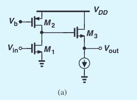

P1. 공통 소스 뒤에 붙은 소스 팔로워의 출력 임피던스
주어진 조건
- $M_1$과 $M_2$: $\lambda \neq 0$
- $M_3$: $\lambda = 0$
- $C_{GS3}$를 제외한 모든 커패시턴스 무시
- 소자 값은 주어지지 않음 (답은 기호로)
구할 것
- 증폭기의 출력 임피던스

원문 보기
그림 11.49는 CS 회로와 소스 폴로어로 구성된 이단 증폭기를 나타낸다. $M_1$과 $M_2$에 대하여 $\lambda \neq 0$이고, 그러나 $M_3$의 $\lambda = 0$이라 가정하고, $C_{GS3}$를 제외한 모든 커패시턴스를 무시하면서, 증폭기의 출력 임피던스를 계산하라.
문제를 읽어요
공통 소스(CS) 단의 드레인 전압이 소스 폴로어의 게이트를 구동해요. 출력은 폴로어의 소스에 있어요. 이 출력에 작은 시험 신호를 넣고, 주파수에 따라 얼마나 많은 전류가 들어가는지 살펴봐요.
이 개념과 공식을 떠올려요
"출력은 폴로어의 소스"와 "$C_{GS3}$만 남겨요"라는 조건에서 소스 팔로워의 출력 임피던스(output impedance) $Z_{out}(s)$를 떠올려요. 출력 임피던스를 볼 때는 독립 입력을 0으로 두고 출력 단자에서 안쪽을 바라봐요. 그러면 CS 단은 폴로어의 게이트를 AC 접지에 이어 주는 저항 $R_G$로 줄어요. 강의 슬라이드의 게이트 쪽 저항 $R_S$ 자리에 이 $R_G$가 들어가요.
$g_{m3}$는 게이트–소스 전압을 제어 전류로 바꾸는 트랜스컨덕턴스예요. $C_{GS3}$는 그 제어 포트(게이트–소스) 사이에 걸린 커패시터이고 임피던스는 $1/(sC_{GS3})$예요.
소스 팔로워의 출력 임피던스는 커패시터를 뺀 저주파 값에서 바로 쓸 수 있어요. 저주파 값을 $B/A$로 놓아요. $A$는 출력 노드로 들어오는 총 컨덕턴스이고, $B=A\cdot Z_{out}(0)$은 무차원 수예요.
$$Z_{out}(s)=\frac{R_SC_{GS}s+B}{C_{GS}s+A}$$이 꼴은 게이트 쪽이 입력 영점 뒤 저항 하나이고, 커패시터가 제어 포트에만 있고, $r_o$를 무시하는 모델에서만 바로 써요. $C_{GD}$나 $r_o$가 추가되면 KCL 유도로 돌아가고 이 꼴은 검산에 써요. 이 문제는 $M_3$가 $\lambda=0$이고 $C_{GS3}$만 남기므로 세 조건을 모두 만족해요. 그래서 KCL을 세우지 않고 저주파 값만 구하면 돼요(소스 팔로워 출력 임피던스, CS 단 뒤의 폴로어, 캡 없는 값에서 바로 쓰기).
종이에 쓸 첫 줄
$v_{in}=0$으로 두면 CS 단의 $M_1,M_2$는 게이트와 소스가 각각 AC 접지여서 제어 전류가 0이에요. 두 드레인에서 접지로 이어지는 저항을 합쳐요.
$$R_G=r_{o1}\parallel r_{o2}$$폴로어 $M_3$의 $r_{o3}$와 이상적 바이어스 전류원은 AC에서 열린 가지예요. 출력에 $V_X$를 걸고 회로 안으로 들어가는 전류를 $I_X$로 잡아요.
먼저 $C_{GS3}$를 열어 저주파 값을 써요. $R_G$에 전류가 흐르지 않으니 $V_G=0$이고, 게이트가 AC 접지인 MOS의 소스를 바라보는 블록이 돼요.
$$Z_{out}(0)=\frac{1}{g_{m3}}$$$r_{o3}$가 열린 가지라서 출력 노드로 들어오는 컨덕턴스는 $g_{m3}$ 하나예요. 이것을 $A$로 두고 $B$를 정규화해요.
$$A=g_{m3}$$ $$B=A\cdot Z_{out}(0)=1$$이렇게 풀어요
게이트 쪽은 $R_G$ 하나이고, 커패시터는 제어 포트의 $C_{GS3}$뿐이며, $r_{o3}$는 열려 있어요. 그래서 KCL 없이 저주파 값의 꼴에 커패시터 항을 바로 더해요.
$$Z_{out}(s)=\frac{R_GC_{GS3}s+B}{C_{GS3}s+A}$$$A=g_{m3}$, $B=1$을 넣어요.
$$Z_{out}(s)=\frac{R_GC_{GS3}s+1}{C_{GS3}s+g_{m3}}$$분모의 $C_{GS3}s$는 출력에서 커패시터로 새는 어드미턴스예요. 분자의 $R_GC_{GS3}s$는 주파수가 높아질수록 $C_{GS3}$가 게이트를 출력에 묶어 $R_G$가 보이게 만드는 항이에요. 마지막에 $R_G$를 원래 소자로 펼쳐요.
$$Z_{out}(s)=\frac{(r_{o1}\parallel r_{o2})C_{GS3}s+1}{C_{GS3}s+g_{m3}}$$완성 답과 검산
입력 영점에서 $C_{GS3}$만 남기고 $r_{o3}$를 열린 가지로 둔 모델의 출력 임피던스예요.
$$Z_{out}(s)=\frac{1+sR_GC_{GS3}}{g_{m3}+sC_{GS3}}$$ $$R_G=r_{o1}\parallel r_{o2}$$분자는 무차원이고 분모의 두 항은 모두 지멘스(S)라서 결과는 옴($\Omega$)이에요.
저주파 극한에서는 $C_{GS3}$가 열려 처음에 쓴 캡 없는 값으로 돌아와요.
$$Z_{out}(0)=\frac{B}{A}=\frac{1}{g_{m3}}$$고주파 극한에서는 $s$항만 남아 $C_{GS3}$가 약분돼요. 게이트와 소스가 함께 움직여 제어 전압이 0으로 가고 출력에서 $R_G$가 보여요.
$$\lim_{s\to\infty}Z_{out}(s)=\frac{R_GC_{GS3}}{C_{GS3}}=R_G$$영점은 $1/(R_GC_{GS3})$, 극점은 $g_{m3}/C_{GS3}$에 있어요.
$$\omega_z=\frac{1}{R_GC_{GS3}}$$ $$\omega_p=\frac{g_{m3}}{C_{GS3}}$$$R_G>1/g_{m3}$이면 $\omega_z<\omega_p$라 영점을 먼저 지나요. 그러면 크기가 $1/g_{m3}$에서 $R_G$로 주파수와 함께 올라가 출력이 유도성(inductive)으로 보여요. 보통 $r_{o1}\parallel r_{o2}$가 $1/g_{m3}$보다 커서 이 경우에 해당해요.
주의할 점
입력 신호를 접지해도 폴로어 게이트는 $R_G$를 거쳐 접지돼요. 게이트를 바로 AC 접지로 보면 $R_G=0$이 되어 분자의 $R_GC_{GS3}s$ 항이 사라지고, 유도성으로 보이는 결과를 놓쳐요.
$Z_{out}(0)=1/g_{m3}$만 보고 $A=1$, $B=1/g_{m3}$로 두면 두 극한은 맞아도 분모 $C_{GS3}s+1$의 차원이 맞지 않아요. $A$는 출력 노드의 총 컨덕턴스 $g_{m3}$, $B$는 $A\cdot Z_{out}(0)=1$로 정규화해요.
이 꼴은 지름길 조건에서만 KCL 없이 써요. $C_{GD3}$나 $r_{o3}$가 남는 문제라면 KCL을 세우고 이 꼴은 검산에 써요.
조건을 바꾸어 생각해요
- CS 단이 이상적인 전압원처럼 폴로어를 구동한다고 가정해 $R_G=0$으로 바꿔 보세요. $A$와 $B$는 그대로인가요? 새 $Z_{out}(s)$와 크기가 주파수에 따라 오르는지 내리는지 판단해 보세요.
- $M_3$의 $\lambda\neq0$이라 $r_{o3}$가 출력과 AC 접지 사이에 남는다면 지름길 꼴을 그대로 쓸 수 있나요? 결과가 위 답과 어떤 관계여야 하는지 말해 보세요.
입력을 0으로 두고 CS 단을 폴로어 게이트에서 본 저항으로 합쳐요.
$$R_G=r_{o1}\parallel r_{o2}$$$C_{GS3}$를 뺀 저주파 값에서 $A=g_{m3}$, $B=1$로 정규화해요.
$$Z_{out}(0)=\frac{1}{g_{m3}}$$게이트 쪽이 $R_G$ 하나이고 $r_{o3}$가 열려 있어 KCL 없이 꼴에 바로 넣어요.
$$Z_{out}=\frac{1+sR_GC_{GS3}}{g_{m3}+sC_{GS3}}$$저주파에서는 $1/g_{m3}$, 고주파에서는 $R_G$로 수렴해요.
$R_G>1/g_{m3}$이면 크기가 주파수와 함께 올라 유도성으로 보여요.